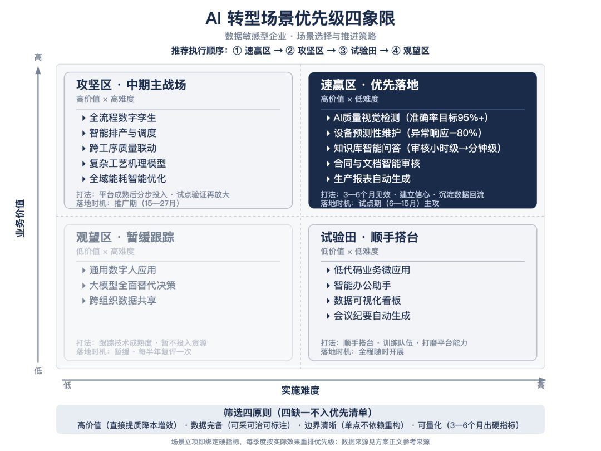

大家好，我是朱智聪。我不是专职做培训的，但在陪企业做 AI 落地的过程中，培训是绕不开的一环。
前两天，我给一家烟草系统的单位讲了一场关于 AI 转型落地的培训，台下来的是中层以上干部和年轻骨干。
复盘下来，总体还算圆满，但实操环节我做得还不够细：这次大部分人没带电脑，我的演示跳跃性偏大，很多人没能真正跟着一步步操作，对 AI 的“手感”不强。
自我改进就一条——以后的培训，我会把“带电脑跟训”明确提出来，演示时放慢节奏，保证每个人都能跟着亲手做一遍。
只有自己跑通过一次，才会对 AI 有更深的领悟。
在培训之后，我思考更多的是，像烟草公司这样的数据敏感单位，该怎么做AI转型落地？
很多人天然想到的办法就是做私有化部署。但是即使做私有化部署，也需要有方法和步骤，不能盲目的就去上设备，不然既浪费钱，效果又不好。
一、数据敏感的单位，为什么“不敢用”AI
以烟草这类单位为例，卡点主要有三个。
一是合规约束。专卖体制叠加《数据安全法》等法律制度要求，这是硬约束，单位的数据不能轻易经由 AI 上网。
二是网络隔离。内网在物理和逻辑上都与外网隔绝，这直接堵死了公有云大模型 API 的接入。
三是组织问责。审计、纪检、巡检常态化，决策者不得不先多想一层：万一出了问题，该担多大责任。
一句话概括：网络隔离是物理约束，合规是制度约束，组织问责是心理约束。前两个决定了“必须私有化”，第三个决定了“必须先小步见效、再谈投入”。
所以对这类单位，真问题从来不是“能不能用”，而是——怎么在数据不出域的前提下，把它用起来。
二、落地的一条主线、三大支柱
做法可以概括成“一条主线、三大支柱”。
一条主线：在“数据不出域”的前提下，用大小模型协同搭一个智能中枢，再以场景牵引、梯度落地。它的核心逻辑是——AI 转型不是买一套大模型系统，而是把数据、模型、场景、组织四个要素拧成一个能持续运转的体系。
三大支柱：
- 数据底座与安全合规——先盘家底、立边界，这是数据敏感企业区别于其他企业的第一道工序；
- 统一 AI 平台——把算力、模型、数据资产统一纳管，破除“模型孤岛”，避免各业务线重复建设；
- 场景矩阵——从业务痛点出发持续孵化高价值场景，让模型能力落到生产和管理一线。
下面我逐一说说。
三、支柱一 · 数据底座与安全合规：先盘家底，再立规矩
转型的第一步不是上模型，而是盘家底、立规矩。其中数据分类分级最容易被忽略，却最关键。
很多单位张口就是“我们数据都不能上网”。但真细问下去，往往是没做过分级。把“绝不能出域”和“可以进内网 AI”切清楚之后，能释放出一大批原本被一刀切封死的可用数据。这一步，同时也是合规审计的硬要求。
先做场景分级，把手里的活分成三档：
- 必须进内网的：涉密材料、案件证据、经营明细、内部经营数据——模型和知识库得放在自己机房，或至少放在专属隔离环境里。
- 脱敏后可以出门的：身份、编号、金额替换掉之后的分析、写作、翻译——脱敏做完，用公网 API 是合规的。
- 本来就公开的：政策法规、行业标准、公开报道、通用写作——别自己给自己上枷锁。
大部分单位一开始真正需要的，其实只有后面两档。想清楚这一点，问题就从“要不要花两百万买服务器”，变成了“先干哪件事”。
| 安全合规要点 | 落地动作 |
|---|---|
| 数据分类分级 | 做数据资产盘点与分级（核心／重要／一般），分级决定存储、使用与共享策略；敏感数据不脱敏不出内网 |
| 模型本地化部署 | 选用开源可私有化的大模型，内网部署、推理不出域；用自有语料调优，构建企业知识库 |
| 权限最小化 | 数据访问与模型调用按角色最小授权，关键操作审批留痕；三色灯／分级预警覆盖异常场景 |
| 审计与追溯 | 全链路操作审计日志，追溯从数天级缩短到数秒级，满足监管对留痕与可解释的要求 |
| 数据治理先行 | 建立数据字典、标签体系与统一指标口径，数据先治理、再上模型 |
四、支柱二 · 统一 AI 平台：大模型管决策，小模型管自治
统一平台的核心范式是“大模型管决策、小模型管自治”。
- 大模型（本地化部署）承担经营决策辅助、知识问答、文档与合同智能等低频、知识密集型任务——它是知识库和智能体的载体。
- 小模型（视觉、预测、机理、控制）承担质量检测、参数预测、故障诊断等高频、毫秒级实时任务。
统一 AI 平台把算力、模型、数据资产统一纳管、一站式开发部署，从机制上防止“模型孤岛”和重复建设。
真进内网，钱花在哪、花多少
以下是 2026 年公开报道与政府采购成交价的量级参考。硬件价格受出口管制、供需和国产化要求影响波动很大，请以正式方案报价为准。
先看硬件——一台机器多少钱：
- 国产推理整机（8 卡，如昇腾 910B4 一档）：约 76 万元/台，含 3 年维保；中低配国产八卡可低至 15–30 万元。
- 主流训练／推理整机（8 卡 H20、高配国产）：约 100–240 万元/台。H20 今年受管制与供需影响波动尤其大——高配 141G 品牌机可到 300 万以上，二手或低配可下探 75 万左右。
- 满血大模型（1.6T 级）：单台八卡 H200 国内报价约 230 万元，通常要 2 台以上。
- 一体机（软硬一体、开箱即用）：政府采购成交价约 10 万–210 万元，通用单机多在 48–104 万元；若含平台搭建与系统集成，项目包可到 600 万元以上。
别只算服务器。一套完整方案还包括：软件平台与推理框架 10–40 万元；定制开发按复杂度分档（基础知识库 15–25 万、专业任务自动化 30–80 万、多智能体协同 100–300 万）；数据治理与模型工程常占总成本的 20%–30%；国产化适配再加约 30% 实施成本；年运维约为初始投入的 15%–25%。此外还有电费与机房改造——功率密度高，普通机柜往往要升级甚至上液冷。
三年总投入（含软件、集成与运维），大致分三档：
| 档位 | 适合 | 三年总投入 |
|---|---|---|
| 入门试点 | 内部知识库、几十到上百人 | 约 80–200 万 |
| 主流生产 | 全单位使用、高并发，含国产化机型 | 约 250–500 万 |
| 满血旗舰 | 大单位、多业务线，1.6T 级模型 | 700–1200 万 |
能不能用 4 卡起步，取决于精度：量化（INT4）后轻量模型的显存约 140–160GB，4 卡可行；若用 FP8 精度（约 500GB），就得 8 卡。
两条省钱的对照路线：
- 走官方 API：DeepSeek V4-Flash 输入 1 元／输出 2 元每百万 token，V4-Pro 12／24 元；500 人规模估算一年约 1.7 万–5.1 万元。
- 算力租赁：国产 8 卡（昇腾 910B 一档）约 1.2–1.65 万元/月、一年十几万；H20 8 卡约 4–6 万元/月。不买硬件，数据同样隔离。
一句实话：私有化的理由不是省钱，是数据不出内网。走官方 API 一年只需几万元，和自建差一到两个数量级。
判断标准：数据绝对不能出内网、有稳定高频需求、有预算有人维护——三条都满足，才值得上私有化。
三个最容易花冤枉钱的地方
- 别急着微调模型。绝大多数场景，“提示词＋知识库检索”就能解决八成问题。微调费钱，效果未必更好，模型一升级还得重训。
- 别按峰值买算力。实际 GPU 利用率常低于 30%，按最高并发买机器，大部分时间都在烧电。
- 别被一体机绑死。一体机十万级到两百多万、开箱即用，但签合同前务必问一句：将来能不能自己加载新的模型权重？主流开源模型是 MIT 协议、权重可自行替换——前提是厂商没把这条路堵死。
让 AI 真正“进工作流”：知识库 + 智能体
买算力只是买了发动机，真正让 AI 干活的是知识库加智能体。
知识库六步：定范围（制度＋流程＋高频问答＋公文模板）→ 扫描件转文本（要 OCR）→ 清洗并标注“现行／废止”→ 切片向量化 → 检索生成、每条带出处 → 权限脱敏、题库验收、专人维护。核心不是技术，是整理功夫。
智能体是什么？一句话：大脑（模型）＋手脚（工具）＋记性（记忆）＋资料柜（知识库）＋规矩（权限与流程）。它不是更聪明的聊天机器人，而是一个会跑腿的助理。
五、支柱三 · 场景矩阵：先打哪一仗
场景选择决定转型成败。从业务痛点出发，用“业务价值 × 实施难度”两个维度排优先级，先打速赢区。

- 速赢区（高价值、低难度）——优先落地。如 AI 质量视觉检测、设备预测性维护、知识库智能问答、合同与文档智能审核、生产报表自动生成。
打法：3–6 个月见效，坚定投入、快速复盘迭代。 - 攻坚区（高价值、高难度）——中期主战场。如全流程数字孪生、智能排产与调度、跨工序质量联动、复杂工艺机理建模。
打法：平台成熟后分阶段投入，试点跑通再推广，周期约 18–27 个月。 - 试验田（低价值、低难度）——顺手搭台。如低代码微应用、智能办公助手、数据可视化、会议纪要自动化。
打法：平台搭好后，让基层随手用起来。 - 观望区（低价值、高难度）——暂缓推演。如通用数字人、大模型全面替代决策、跨组织数据共享。
技术成熟度不足，暂不投入，每年复审一次。
不同类型的企业，场景矩阵不一样，具体需要根据企业实际需要编排象限。
筛选四原则——高价值（直接提质／降本／增效）、数据完备（可采集、可治理、可标注）、边界清晰（单点场景，不依赖跨系统重构）、可量化（3–6 个月能拿出硬指标）——四缺一，不进优先清单。
三步走：钱和人怎么配
第一步，个人提效。零预算，今天就能开始。在公文、材料、分析这些重复劳动上用起来，用公网工具也行，前提是材料脱敏。遇到重复劳动，先问自己一句“这个能不能让 AI 先做一遍”。
第二步，科室小场景。几万到几十万。选一个高频、低风险、见效快的场景做样板——客户经理经营简报、政策文件问答、会议纪要整理。用 API 或轻量本地部署先把闭环跑通。关键是定业务指标，不是技术指标，比如“公文初稿时间从 5 小时降到 30 分钟”。
第三步，单位级能力。百万级，要立项、要预算、要人。知识库、智能体、本地化部署，对应前面的量级：入门试点约 80–200 万、主流生产约 250–500 万（均为三年总投入）。这一步必须配明确的责任人和固定的维护人。没人维护，装了也会闲置。
三条底线从头到尾不变：数据不出内网、结果人工复核、关键动作留痕可追溯。再补一句给管理层的话：人管目标，AI 管执行，人担责任。
最后
三个小时讲不完落地。
一句话我每次都讲：AI 是放大器——放大你的优势，补上你的短板。
如果你所在的单位也卡在“数据不能出内网”这一条上，不知道从哪起步、预算怎么算、方案靠不靠谱——带上你最烦的那件重复劳动来找我，我们当场合计一下：值不值得做、要多少钱、几步能跑通。
感谢阅读，我是 Zero，一个拥抱 AI 时代的实践者。
原文首发于公众号「忙而不匆1802」：烟草公司培训后的复盘思考，数据敏感型企业怎么做AI转型落地